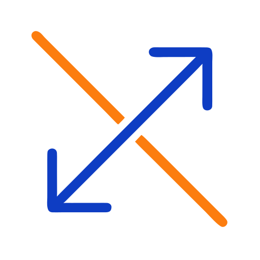

φ
Raccolta Gare di Fisica
Aree
Argomenti
Metodi
Abilità
Objects
Prove
Soluzioni
⌕
Cerca nel sito…
Ctrl K
Ricerca per tag
◐
Raccolta Gare di Fisica
Search
Cerca
Tema scuro
Tema chiaro
Modalità lettura
Esplora
Home
❯
methods
❯
Vector Decomposition
Vector Decomposition
Properties
1
tags
graph/method
19 lug 2026
1 minuto
graph/method

Method
—
1377
problemi/quesiti.
Problemi e quesiti
Vista grafico
Link entranti
Canada 1994 Locale Quiz
Canada 1995 Locale Quiz
Canada 1996 Locale Quiz
Canada 1997 Locale Quiz
Canada 1998 Locale Quiz
Canada 1999
OII 2011 1° Livello
OII 2012 1° Livello
OII 2013 1° Livello
OII 2014 1° Livello
OII 2015 1° Livello — 1liv15T def.pdf
OII 2016 1° Livello
OII 2017 1° Livello Quiz
OII 2018 1° Livello Quiz
OII 2019 1° Livello Quiz
OII 2020 1° Livello Quiz
OII 2021 1° Livello
OII 2022 1° Livello
OII 2023 1° Livello
OII 2023 1° Livello Quiz
OII 2024 1° Livello Quiz
OII 2025 1° Livello
OII 2026 1° Livello
OII 2000 1° Livello Quiz
OII 2001 1° Livello Quiz
OII 2003 1° Livello Quiz
OII 2004 1° Livello Quiz
OII 2005 1° Livello Quiz
OII 2006 1° Livello
OII 2007 1° Livello
OII 2008 1° Livello
OII 2009 1° Livello
OII 2010 1° Livello Quiz
OII 1998 1° Livello Quiz — 1lv98 (2 files merged).pdf
OII 1999 1° Livello Quiz — 1lv99s (2 files merged).pdf
Canada 2000
Canada 2001
Canada 2003
Canada 2004
Canada 2005
Canada 2006
ASOE 2007
NBPhO 2007
USA 2007
Canada 2007
ASOE 2008 ''
NBPhO 2008
USA 2008
F=ma 2008
Canada 2008
Nordic 2009
Spagna 2009
Spagna 2009 — 2009 soluciones_08_09.pdf
USA 2009
F=ma 2009
USAPhO 2009 Semifinal
Russia na
Nordic 2010
Spagna 2010
F=ma 2010
USA 2010
USAPhO 2010 Semifinal
Canada 2010
ASOE 2011
Spagna 2011
Spagna 2011 — 2011 soluciones_10_11.pdf
USA 2011
F=ma 2011
UK 2011
ASOE 2012 Locale Quiz
Nordic 2012
USA 2012
F=ma 2012
Canada 2012
ASOE 2013
Nordic 2013
USA 2013
OEF 2013 Locale Teorica — 2013 soluciones_12_13.pdf
Argent 2013 ''
F=ma 2013
USAPhO 2013
UK 2013
UK 2013
UK 2013
ASOE 2014
Nordic 2014
Nordic 2014 — 2014 est-fin_2014sol.pdf
USA 2014
Spagna 2014
F=ma 2014
UK 2014
UK 2014
ASOE 2015
CAP 2015
NBPhO 2015
USA 2015
Spagna 2015
Spagna 2015 — 2015 soluciones_2015.pdf
Argent 2015
F=ma 2015
UK 2015
ASOE 2016
CAP 2016
USA 2016
Argent 2016
F=ma 2016
UK 2016
ASOE 2017
F=ma 2017
Spagna 2017
Spagna 2017 — 2017 soluciones_2017.pdf
USAPhO 2017
Spagna 2017
Argent 2017
UK 2017
F=ma 2018
F=ma 2018
BPhO 2018
OEF-Salamanca 2018 Round 1 (Fase Local)
Spagna 2018
Argent 2018
UK 2018
ASOE 2019
CAP 2019
Spagna 2019 — 2019 Experimento-plano inclinado resuelto.pdf
Spagna 2019
Argent 2019
Argent 2019
USAPhO 2019 1° Livello Quiz
UK 2019
ASOE 2020
BPhO 2020
Argent 2020
F=ma 2020
F=ma 2020
UK 2020
Spagna 2021
F=ma 2021
UK 2021
BPhO 2022
F=ma 2022
F=ma 2022
2022_phods_mock_f_ma
USA 2022
CAP 2022
UK 2022
OII 2022 1° Livello Quiz
Spagna 2023
ASOE 2023
NBPhO 2023
CAP 2023
F=ma 2023
UK 2023
OII 2023 1° Livello
Spagna 2024
CAP 2024 Nazionale — 2024_CAP_Exam_with_solutions.pdf
CAP 2024 Nazionale — 2024_CAP_Exam_with_solutions_May62025.pdf
F=ma 2024
Spagna 2025
Spagna 2025 — 2025 Soluciones_2025.pdf
CAP2025 2025 Nazionale — 2025_CAP_Exam_with_solutions.pdf
F=ma 2025
[CAP 2026 National] — 2026_CAP_Exam_with_solutions.pdf
Brasil 2006 — 2_lugar.pdf
OII 2010 2° Livello Quiz
OII 2016 2° Livello
OII 2017 2° Livello
OII 2018 2° Livello
OII 2019 2° Livello
OII 2020 2° Livello
OII 2021 2° Livello
OII 2023 2° Livello
OII 2024 2° Livello
OII 2025 2° Livello
OII 2026 2° Livello
OII 2001 2° Livello Quiz
OII 2003 2° Livello
OII 2005 2° Livello Teorica
OII 2006 2° Livello Teorica
OII 2007 2° Livello
OII 2008 2° Livello
OII 2011 2° Livello
OII 1998 2° Livello Teorica — 2lv98 (2 files merged).pdf
OII 1999 2° Livello Teorica — 2lv99s (2 files merged).pdf
Svizze 2023
Svizze 2025
Svizze 2025
Svizze 2026
Brasil 2006 — 3_lugar.pdf
[IPhO-DE 2016 Round 1] — 47_IPhO_2016_1Rd_Aufgaben_Loesungen.pdf
[IPhO-DE 2019 Round 1] — 50_IPhO_2019_1Rd_Aufgaben_Loesungen.pdf
IPhO 2019
IPhO 2020
IPhO 2021
IPhO-DE-2Rd-2021 2021 Round 2 — 51_IPhO_2021_2Rd_Aufgaben_Loesungen_web.pdf
IPhO 2023
GaS 2024 Allenamento Online
GaS 2024 Allenamento Online
GaS 2025 Allenamento Quiz
GaS 2024 Allenamento Online
GaS 2025 Allenamento Quiz
GaS 2025 Allenamento Quiz
GaS 2023 Allenamento Teorica
GaS 2026 Locale Squadre
GaS 2026 Locale Squadre
GaS 2026 Locale Squadre
GaS 2026 Locale Squadre
APhO 2005 — Teorica
APhO 2008 — Teorica
APhO 2013 — Teorica
APhO 2019 — Teorica
APhO 2021 — Teorica
APhO 2024 — Teorica
BPhO 2002
BPhO 2004 Locale Round 1
BPhO 2005 Locale Round 1
BPhO 2006 Locale Round 1
BPhO 2007 Locale Round 1
BPhO 2010
BPhO 2011
BPhO 2003
BPhO 2004
BPhO 2007
Russia 2011
Russia 2013
Colomb 2001
Colomb 2002
Colomb 2003
Colomb 2005
Russia 2016
Russia 2018
Argent 1992 Locale Quiz
Argent 1993 Locale Quiz
Argent 1994 Locale Quiz
Argent 1995 Locale Quiz
Argent 1996
Argent 1997
Argent 2004
Argent 2005
Argent 2006
Argent 2007
Argent 2008
Argent 2009
Argent 2010
Argent 2011
Argent 2012
Argent 2013
Argent 2014
Argent 2015
Argent 2016
Argent 2017
Argent 2018
Argent 2019
Argent 2020
Argent na
Anacleto 2003 Teoria — DR_2003-20012.pdf
Anacleto 2023 Nazionale Quiz
Anacleto 2025 Nazionale Quiz
Svizze 2018
OII na Teorica
OII na Teorica
OII na Teorica
Spagna 2013
OEF 2014 Locale Quiz
Spagna 2015
OBF 2024 Locale Round 1 — fase1_gab_v2.pdf
Brasil 2024
Brasil 2025 — fase1_n1.pdf
Brasil 2024
Brasil 2025 — fase1_n2.pdf
Brasil 2024
Brasil 2025
Brasil 2024
Brasil 2025 — fase2_n2.pdf
Brasil 2024
Svizze 2026
GaS 2023 Nazionale Teorica
Russia na
GPhO 2022
HKPhO 2009
HKPhO 2010
HKPhO 2011 — Junior
HKPhO 2012 — Junior
HKPhO 2013
HKPhO 2014
HKPhO 2015
HKPhO 2016
HKPhO 2017
HKPhO 2018
HKPhO 2019
HKPhO 2020
HKPhO 2021
HKPhO 2022
HKPhO 2023
INAO 2023
INAO 2025
INAO Senior 2009
Russia 2019
Russia 2020
INJSO 2009
INJSO 2011
INJSO 2013
INJSO 2014
INJSO 2016
INJSO 2017
INJSO 2018
INJSO 2019
INPhO 2025
IOQP 2021 (Part II)
OII na '' — IPhO03 ITA TH1.pdf
OII na Teorica
OII na Teorica — IPhO16 - Theory Q0
IPhO 2027
Russia na
iberoa 1991
OII 1996 1° Livello Quiz — loc96 (2 files merged).pdf
OII 1997 1° Livello Quiz — loc97 (2 files merged).pdf
F=ma 2020
F=ma 2021
OII 2000 Nazionale Teorica
OII 2001 Nazionale Teorica
OII 2002 Nazionale Teorica
OII 2012 Nazionale Teorica
OII 2016 Nazionale Teorica
OII 2016 Nazionale
OII 2018 Nazionale Teorica
OII 2018 Nazionale Teorica
OII 2019 Nazionale
OII 2021 Nazionale Teorica
OII 2022 Nazionale Teorica
OII 2022 Nazionale Teorica
OII 2023 Nazionale Teorica
OII na Nazionale Teorica
GaS 2025 Nazionale Quiz
GaS 2026 Nazionale Squadre
BPhO 2024
BPhO 2025
OBF 2017 — NIVEL II FASE 2 OBF 2017 I.pdf
Brasil 2006
Brasil 2017 — nivel1.pdf
Brasil 2006
Brasil 2017 — nivel2.pdf
NSEA 2023
NSEA 2025
NSEJS 2024
NSEP 2023
NSEP 2024
NSEP 2025
OBF 2018 N1
OBF 2018 N2
OBF 2018
OBF 2018
OBF 2019
OBF 2019
OBF 2019
OBF 2019
OBF 2019
OBF 2019
OBF 2019
OBF 2020
OBF 2020
OBF 2020
OBF 2020
OBF 2020
OBF 2021
OBF 2021
OBF 2021
OBF 2021
OBF 2021
OBF 2022
OBF 2022
OBF 2022
OBF 2022
OBF 2022
OBF 2022
OBF 2022
OBF 2023
OBF 2023
OBF 2023
OBF 2023
OBF 2023
OBF 2023
OBF 2023
OBF 2023
OBF 2023
OBF 2024
OBF 2006
OBF 2006
OBF 2006
OBF 2006 ''
OBF 2006
OBF 2006
OBF 2006
OBF 2006 — OBF2006_F3_8a_gab.pdf
OBF 2007
OBF 2007
OBF 2007
OBF 2007
OBF 2007
OBF 2008
OBF 2008
OBF 2008
OBF 2008
OBF 2009
OBF 2009
OBF 2009
OBF 2009
OBF 2009
OBF 2010
OBF 2010
OBF 2010
OBF 2010
OBF 2010 ''
OBF 2011 ''
OBF 2011
OBF 2011
OBF 2011
OBF 2014 ''
OBF 2014 '' — OBF2014_F2_NivelII.pdf
OBF 2014 'III'
OBF 2014 '' — OBF2014_F2_NivelIII.pdf
OBF 2014
OBF 2014
OBF 2014 — OBF2014_F3_TEO_NivelIII.pdf
OBF 2015
OBF 2015 — OBF2015_ProvaN1_3fase.pdf
OBF 2015
OBF 2015 — OBF2015_ProvaN2_3fase.pdf
OBF 2015
OBF 2015 — OBF2015_ProvaN3_3fase.pdf
Brasil 2016
Brasil 2016 — OIFTeoria2Final2016.pdf
Spagna 2019
Spagna 2024
OPhO 2020 — Open
OPhO 2021 — Open
OPhO 2023 — Open
OPhO 2024 — Open
OPhO 2025 — Open
Spagna 2010
Spagna na
Spagna 2014
Spagna 2026
PLANCKS 2015 — Leiden
PLANCKS 2016 — Bucharest
PLANCKS 2017 — Graz
PLANCKS 2019 — Odense
PLANCKS 2021 — Porto
PLANCKS 2022 — UK&Ireland Preliminary
PLANCKS 2023 — Milan
PLANCKS 2024 — Dublin
OBF 2015 — Prova Nivel2 OBF 2015 fase2.pdf
OBF 2015 — Prova NÃviel1 OBF 2015 fase2.pdf
OBF 2015 — Prova NÃviel1 OBF 2015 fase2.pdf
OBF 2015 — Prova NÃviel3 OBF 2015 fase2.pdf
OBF 2015 — Prova NÃviel3 OBF 2015 fase2.pdf
Brasil 2006
Brasil 2016 — Prova1aFaseNivel1a.pdf
Brasil 2006
Brasil 2016 — Prova1aFaseNivel2a.pdf
Brasil 2006
Brasil 2016 — Prova1aFaseNivel3a.pdf
OBF 2015 — Prova_OBF2015_F1_Nivel_IIa.pdf
Brasil 2017
Brasil 2017 — ProvaNiel2Fase1final2017b.pdf
Brasil 2017
Brasil 2017 — ProvaNivel3Fase1final2017b.pdf
Argent 1991
Argent 1994
Argent 1996
Argent 1998
Argent 1999
Argent 2005
Argent 2010
GaS 2023 Qualifica Teorica
GaS 2025 Qualifica Quiz
GaS 2026 Locale Squadre
OII 1996 2° Livello Teorica — reg96 (2 files merged).pdf
Russia 2019
Russia 2018
Russia 2019
Russia 2020
SJPO 2010
SJPO 2011
SJPO 2012
SJPO 2013
SJPO 2014
SJPO 2015
SJPO 2016
SJPO 2017
SJPO 2018
SJPO 2019
SJPO 2022
SJPO 2023
SJPO 2024
Russia na
SPhO 2012
SPhO 2014
SPhO 2020
SPhO 2021
SPhO 2023
SPhO 2024
OII 2011 Nazionale Teorica
OII na Teorica — TCQsmc-IPhO16 - Theory Q1
OII 2005 Nazionale Teorica
OII 2006 Nazionale Teorica
OII 2006 Nazionale
OII 2007 Nazionale Teorica
OII 2007 Nazionale Teorica
OII 2008 Nazionale Teorica
OII 2008 Nazionale Teorica
OII 2009 Nazionale
OII 2010 Nazionale Teorica
OII 2011 Nazionale Teorica
Brasil 2016 — TeoN1f3.pdf
Brasil 2006
Brasil 2016 — TeoN2f3.pdf
Brasil 2006
Brasil 2017 — Teoria_IFinal2017.pdf
OII na Teorica
OII na Nazionale Sperimentale — testo finale.pdf
OII na Nazionale Sperimentale
OII na Teorica
[VsOSh 2025 Final]
WoPhO 2011
WoPhO 2013
OII 2014 2° Livello — 2liv14S-Def.pdf
OII 2014 Nazionale Teorica — Naz14S def.pdf